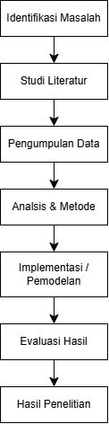

Deskripsi Umum Riset
Pusat riset dosen berfokus pada pengembangan solusi digital untuk pendidikan, kesehatan, dan tata kelola data. Setiap penelitian diarahkan agar menghasilkan luaran yang relevan, efisien, dan dapat diimplementasikan secara nyata. Pendekatan riset selalu menekankan kolaborasi antardisiplin, keterbukaan data, serta kualitas publikasi yang konsisten. Dalam pelaksanaannya, tim menjunjung prinsip akurasi, etika, dan keberlanjutan sehingga hasil riset memberikan manfaat bagi masyarakat, institusi, dan mitra industri. Beberapa kata dan simbol yang sering muncul dalam dokumentasi riset adalah hak cipta ©, merek dagang ™, serta istilah konektivitas jaringan seperti R&D dan A→B.
Catatan: Teks di atas sengaja memuat lebih dari tiga entitas karakter khusus, yaitu ©, ™, &, dan panah A→B.
Bidang Keahlian Dosen
-
Rekayasa Perangkat Lunak
- Pengujian perangkat lunak dan jaminan kualitas
- Arsitektur aplikasi web dan integrasi layanan
- Manajemen kebutuhan pengguna
-
Sains Data dan Kecerdasan Buatan
- Analitik prediktif untuk pendidikan tinggi
- Pemrosesan data tekstual dan klasifikasi dokumen
- Visualisasi data untuk pengambilan keputusan
-
Sistem Informasi Kesehatan dan Pemerintahan
- Interoperabilitas data layanan publik
- Perancangan dashboard evaluasi kinerja
- Tata kelola data dan keamanan informasi
Daftar Publikasi Ilmiah
| No. | Nama Dosen | Kelompok Riset | Informasi Publikasi | Status Sinta | ||
|---|---|---|---|---|---|---|
| Judul Artikel | Jurnal/Prosiding | Tahun | ||||
| 1 | Dr. Andi Pratama, S.Kom., M.Kom. | Rekayasa Perangkat Lunak | Evaluasi Kualitas Aplikasi Akademik Berbasis Web Menggunakan ISO 25010 | Jurnal Teknologi Informasi Terapan | 2024 | Terindeks Sinta 2 |
| Analisis Penggunaan Continuous Integration pada Proyek Sistem Informasi Kampus | Prosiding Seminar Nasional Informatika | 2023 | Terindeks Sinta 3 | |||
| 2 | Dr. Siti Rahma, S.T., M.T. | Sains Data dan Kecerdasan Buatan | Prediksi Kelulusan Mahasiswa Menggunakan Algoritma Random Forest | Jurnal Data Cerdas Indonesia | 2024 | Terindeks Sinta 2 |
| Klasifikasi Topik Skripsi Berbasis Natural Language Processing pada Repository Kampus | Jurnal Komputasi dan Analitik | 2022 | Terindeks Sinta 4 | |||
| 3 | Dr. Budi Santoso, S.KM., M.Kes. | Sistem Informasi Kesehatan | Perancangan Dashboard Monitoring Layanan Puskesmas Berbasis Web | Jurnal Sistem Informasi Kesehatan | 2024 | Terindeks Sinta 3 |
| Total dosen yang ditampilkan | 3 dosen / 5 publikasi | |||||
Diagram Alur Metodologi Riset
